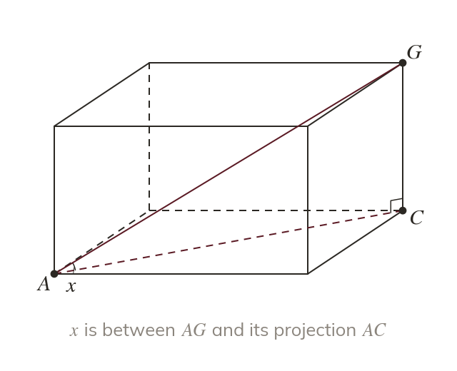
The angle to the projection
The angle between a line and a plane is measured to the line's projection. The projection lies straight below the line, on the plane.
A ramp, a roof or a pyramid meets the ground at an angle nobody can measure directly. The right-angled triangle inside the solid gives that angle.
Work down the page at your own pace. Write every answer in your book first, then click to check it.
Read each card, then follow the worked examples one step at a time.

The angle between a line and a plane is measured to the line's projection. The projection lies straight below the line, on the plane.
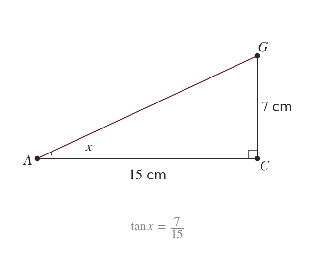
The line, its projection and the perpendicular make a right-angled triangle. Redrawn flat, two of its sides give the angle.
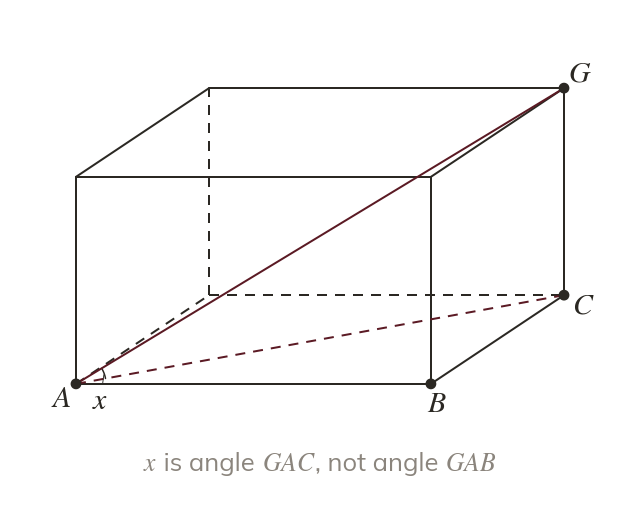
The projection runs across the base, not along an edge. So angle is the wrong angle.
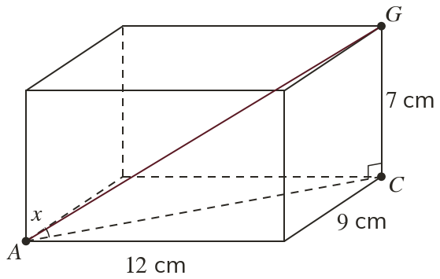
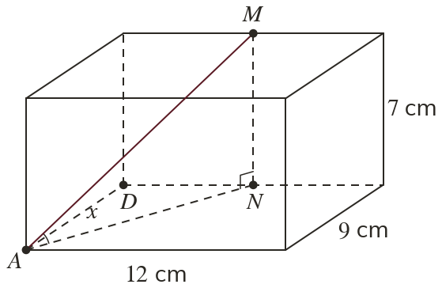
Pick an answer. If it's wrong, the feedback tells you which mistake it was.
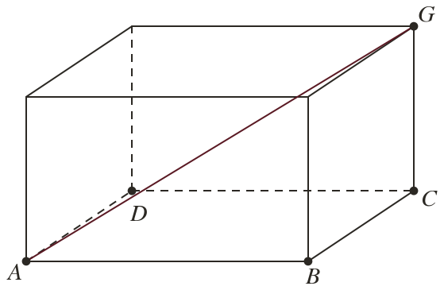
Write the blanks in your book first, then tap each one to check.
Read each card, then follow the worked examples one step at a time.
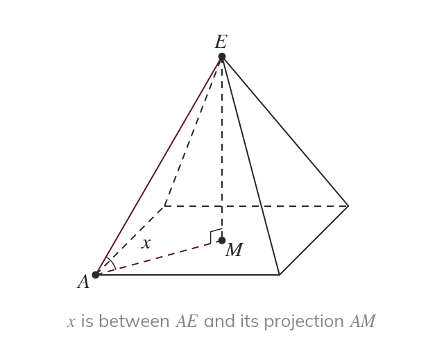
A pyramid's apex is above the centre of its base. So a sloping edge projects onto half a base diagonal.
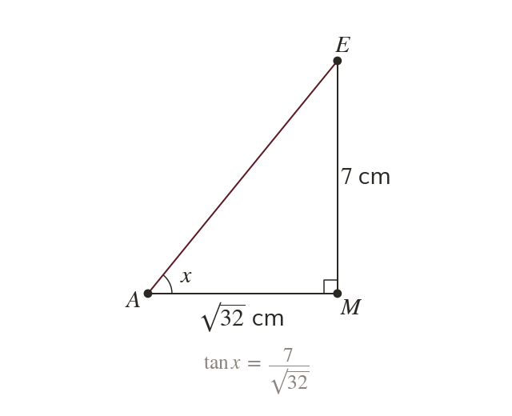
In triangle the height is opposite the angle. The sloping edge is the hypotenuse.
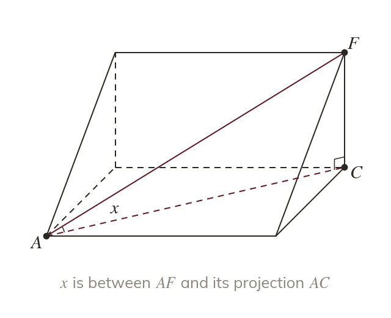
A wedge's sloping diagonal projects onto the base diagonal. The vertical end closes the triangle.
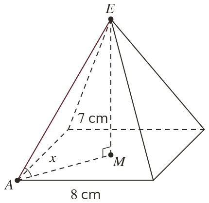
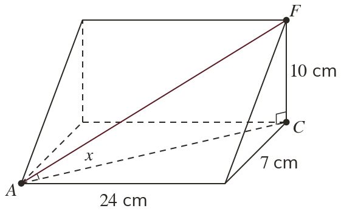
Pick an answer. If it's wrong, the feedback tells you which mistake it was.
Write the blanks in your book first, then tap each one to check.
Finished? Next lesson: 10H.17.3 Lengths and Angles in Three Dimensions.
For each skill, tap the one that is true for you today. Your Revise pages start with anything you mark Not yet.
Your ratings are saved on this device only.
Log in, then search for a code to practise that skill.
Videos, worksheets and more on each part of this lesson.